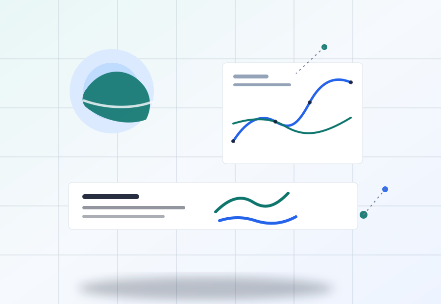

Theme radar
主题雷达
正在加载论文数据...
Latest papers
论文列表
| 日期 | 期刊 | 主题 | 论文 | 链接 |
|---|

Research group radar
聚合近半年核心期刊论文，按主题、期刊和摘要可用性组织，保留英文原始题录、关键词、摘要与官方链接。
Theme radar
正在加载论文数据...
Latest papers
| 日期 | 期刊 | 主题 | 论文 | 链接 |
|---|
Journal sources
监测 18 个高质量期刊；题录来自官方源和 DOI 元数据，全文始终回链原站。